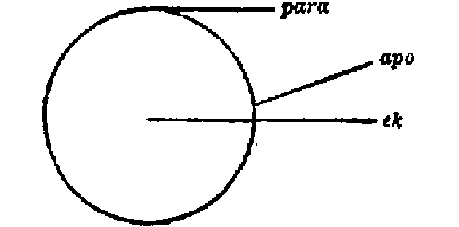

104. PREPOSITIONS.
For the true understanding of the New Testament a knowledge of the Greek
Prepositions is indispensable.
They might be exhibited in groups, or according to the Cases (*1) of
the Noun which they govern, or according to their geometrical relations
to a line, a superficies, and a solid, or according to the relative frequency
of their occurrences (*2). But we have given them below in their
alphabetical order, so that they may be more readily found by the
reader.
They are eighteen in number, and may thus be defined :--
- ana governs only one case (the Accusative), and
denotes up, upon, formed from ano (as kata
is from kato, which ana stands in direct antithesis).
In relation to vertical lines it denotes the top. With
numerals it is used as a distributive (Matt. 20:9, 10. Luke 9:3.
John 2:6); also adverbially (Rev. 21:21).
- anti governs only one case (the Genitive),
and denotes over against, or opposite. Hence it is used as
instead of or in the place of (e.g. Matt. 2:22. Luke 11:11); and
denotes equivalence (Matt. 20:28. Heb. 12:16. 1Pet.
3:9), while huper (No. xvii, below) denotes in the interest of,
or on behalf of (Luke 6:28. John 17:19).
- amphi is used only in composition in the N.T.
and is rare in Classical Greek. It denotes about, or around.
Used of a solid, it denotes both sides.
- apo governs only one case (the Genitive), and
denotes motion from the surface of an object, as a line drawn from the
circumference; it thus stands in contrast with ek (No. vii, below),
which denotes a line drawn from the centre; while
para denotes
a line drawn as a tangent, thus --

Hence, it is used of motion away from a place (e.g. Matt.
3:16; 8:1. Acts 15:38); marking the distance which separates the
two places, or the interval of time between two events (e.g. Matt. 19:4.
Acts 20:18). It also marks the origin or source whence anything comes
such as birth, descent, residence (e.g. Matt. 2:1; 15:1; 21:11. Acts
10:23; 17:13), or of information (e.g. Matt. 7:16).
Apo may consequently be used of deliverance or passing away
from any state or condition (e.g. Matt. 1:21; 14:2. Mark 5:34.
Acts 13:8; 14:15. Heb. 6:1.
It would thus differ from hupo (No. xvii, below), which would
imply a cause of immediate and active, while apo would imply
a cause of virtually passive, and more remote.
- dia governs two cases (the Genitive and Accusative).
- With the Genitive it has the general sense of
through,
as though dividing a surface into two by an intersecting line. It
includes the idea of proceeding from and passing out
(e.g. Mark 11:16. 1Cor. 3:15. 1Tim. 2:15. 1Pet. 3:20).
Cp. diameter.
In a temporal sense; after an interval (Matt. 26:61. Mark 2:1.
Gal. 2:1).
From the ideas of space and time dia (with the Gen.) denotes
any cause by means of which an action passes to its accomplishment
(e.g. Matt. 1.22. John 1:3. Acts 3:18. 1Cor. 16:3.
2Cor. 9:13); hence, it denotes the passing through whatever is interposed
between the beginning and the end of such action.
- With the Accusative it has the sense of on account of,
or because of (e.g. Matt. 27:18. Mark 2:27. Rev. 4:11),
indicating both the exciting cause (Acts 12:20. Rom. 4:25.
1Cor. 11:10), the impulsive cause (e.g. John 12:9. Rom. 4:23; 15:15.
Heb. 2:9), or the prospective cause (Rom. 6:19; 8:11; 14:15. Heb.
5:3).
- eis governs only one case (the Accusative).
Euclid uses eis when a line is drawn to meet another line, at a
certain point. Hence, it denotes motion to or unto
an object, with the purpose of reaching or touching it (e.g. Matt. 2:11;
3:10. Luke 8:14. Acts 16:10).
From this comes the idea of the object toward which such motion is directed
(e.g. Matt. 18:20, 30. 1Cor. 12:13. Gal. 3:27); and for,
or with respect to which such action or movement is made.
In contrast with eis, pros (No. xv, below) may mark one
object as the means of reaching an ulterior object which is denoted
by eis (e.g. John 6:35. Rom. 5:1. Eph. 4:12).
It is the opposite of ek (No. vii, below).
- ek governs only one case (the Genitive), and
denotes motion from the interior. See under apo (No.
iv, above, and diagram there). It is used of time, place, and origin.
It means out from as distinguished from apo (No. iv, above),
which means off, or away from. Ek marks the
more immediate origin, while apo marks the more remote origin; of
expressing the intermediate meanings.
- en governs only one case (the
Dative), and denotes being or remaining within, with the primary
idea of rest and continuance. It has regard to place and space (e.g.
Matt. 10:16. Luke 5:16), or sphere of action (e.g. Matt. 14:2.
Rom. 1:5, 8; 6:4).
It is also used for the efficient cause as emanating from within, and
hence has sometimes the force of by, denoting the instrument,
with,
passing on to union and fellowship; en denoting inclusion, and sun
(No. xvi, below) denoting conjunction. En denotes also continuance
in time (Matt. 2:1; 27:40. John 11:10).
2. with plural = among.
- epi governs three cases (the Genitive, Dative,
and Accusative), and denotes superposition.
- With the Genitive it denotes upon, as proceeding or springing
from, and answers to the question "Where?" (e.g. Matt. 9:2; 10:27.
Mark 8:4. Luke 22:30. John 6:21).
With the idea of locality it conveys the sense,
in the presence
of (e.g. Matt. 28:14. Mark 13:9. Acts 24:19. 1Cor.
6:1).
With the idea of time, it looks backward and upward, e.g. "in
the days of" (Matt. 1:11. Heb. 1:2).
With the idea of place, it denotes dignity and power (e.g. Matt.
23:2. Acts 12:21. Rom. 9:5. Rev. 2:26).
- With the Dative it implies actual superposition, as one thing
resting upon another, as upon a foundation or basis which may be actual
(e.g. Mark 6:25, 28, 39), or moral (e.g. Matt. 18:13. Mark 3:5).
Both senses occur in 1Thess. 3:7.
Hence it is used of the moving principle or motive suggesting the purpose
or object (e.g. Eph. 2:16), and sometimes including the result (e.g. 2Tim.
2:14).
- With the Accusative it implies the downward pressure on that upon
which a thing rests; active motion being suggested (e.g. 2Cor. 3:15.
1Tim. 5:5).
Hence, it denotes any extended motion downward (Matt. 13:2; 18:12; 19:28;
27:45) from heaven to earth (Mark 4:20. Acts 11:15. 2Cor. 12:9).
Compared with pros (No. xv, below), pros marks the motion, the
direction to be taken, while epi (with Acc.) marks the point to
be reached.
This downward pressure may be that of the mind, or feeling (e.g. Matt.
25:21; 27:43. Heb. 6:1. 1Pet. 1:13).
For the difference between eis (No. vi, above) and epi
(with the Acc.) see Rom. 9:21, "one vessel unto (eis) honour", and
v. 23, "riches of glory on (epi) the vessels of mercy".
- kata governs two cases (the Genitive and the
Accusative), and denotes two motions, vertical and horizontal.
- With the Genitive it denotes vertical motion, the opposite
of ana (No. i, above), descent, or detraction from a higher place
or plane (e.g. Matt. 8:32. Mark 5:13); and direction to, or against
(e.g. Mark 9:40. John 18:29. Acts 25:27. 2Cor. 13:8).
- With the Accusative it denotes horizontal motion,
along
which the action proceeds (e.g. Luke 8:30; 10:33. Acts 5:15;
8:26. Phil. 3:14). Sometimes it includes the purpose or intention
(e.g. 2Tim. 1:1; 4:3. Tit. 1:1). In this connection eis
(No. vi, above. 2Tim. 4:14) marks the more immediate purpose, pros
(No. xv. 3. Eph. 4:12. Philem. 5) the ultimate purpose, and
kata (No. xv. 2) the destination of the motion (e.g. Matt. 27:15.
Heb. 3:8) and the accordance, conformity or proportion of the two things
which such motion thus connects (e.g. Matt. 16:27; 23:3; 25:15. Luke
2:22).
- meta governs two cases (the Genitive
and the Accusative), and denotes association and companionship
with. It thus differs from
sun (No. xvi, below), which
denotes proximity to and hence
conjunction or coherence.
Compare Eph. 6:23 (meta) with Eph. 4:31 (sun); and 1Thess.
3:13 (meta) with Col. 3:3 (sun).
- Hence meta, with the Genitive, denotes
among,
amid
(e.g. Matt. 26:58. Mark 1:13. Rev. 21:3), or in company
with (e.g. Matt. 9:15. John 11:31. 2Thess. 1:7. Rev.
14:13).
It refers specially to the mental disposition with which an action is
performed (e.g. Matt. 12:30. Mark 3:5. Luke 1:39; 9:49.
John 8:28. 2Cor .7:15).
- With the Accusative it means after, always in connection
with time (e.g. Matt. 17:1; 26:32. John 13:7. Heb. 4:7; 7:28).
- para governs three cases (Gen.,
Dat., and Acc.), and the uniform meaning is beside, or along
side of. See apo, No. iv, above, and cp. diagram
there.
- With the Genitive it denotes from beside, implying the source
from which anything proceeds (e.g. Matt. 2:4; 21:42.
Luke 2:1; 6:19. Acts 26:10. Phil 4:18).
As distinguished from hupo (No. xviii, below) it denotes the
general sense of motion, while hupo marks the
special
sense or efficient cause of such motion.
As distinguished from apo (No. iv, above) it marks the motion
from a person (e.g. Matt. 2:16), while apo may imply motion from
a place (e.g. Matt. 2:1).
- With the Dative it denotes rest beside,
and at
a person, place, or thing, expressing rest and position there (e.g. John
19:25. Acts 9:43); laid up with or in store with (e.g. Matt. 6:1.
Luke 1:30), or proximity to (e.g. Matt. 22:25. Col. 4:16).
Hence it implies in the power of (Matt. 19:26. Luke 1:37); in
the judgment of (e.g. Rom. 2:12. 2Pet. 2:11).
- With the Accusative it denotes motion to a place so as to be
alongside it (e.g. Matt. 15:29. Mark 4:1).
Hence, beside and beyond, and so against
(e.g.
Acts 18:13. Rom. 1:25, 26; 4:18. 1Cor. 3:11; Gal. 1:8); and
beside,
i.e. more or less than (e.g. Luke 3:13; 13:2. Rom.
14:5. 2Cor. 11:24). Compare pros, No. xv, below.
- pert governs two cases (Genitive and Accusative),
and denotes around, or about, like a completed circle.
Hence concerning. It marks the object about which the action
of the verb takes place.
- With the Genitive it means as concerning, or, as
regards, but always with the primary idea, and marking the central
point of the activity (e.g. Matt. 4:6. Luke 24:19, 27, 44).
- With the Accusative it denotes the extension of such activity,
hence, around (e.g. Mark 9:42. Luke 13:8. Acts 28:7.
Phil. 2:23).
- pro governs only one case (the
Genitive), and denotes the position as being in sight or, before
one, in place (e.g. Luke 7:27; 9:52. James 5:9); time
(e.g. Matt. 5:12. John 17:24. Acts 21:38); or superiority
(e.g. Jas. 5:12. 1Pet. 4:8).
- pros governs three cases (the
Genitive, Dative and Accusative), and denotes to, or,
toward,
implying motion onward. Its general meaning with the three
cases is the motive -- as in consideration of
(with the Genitive);
in
addition to anything -- as an act (with the Dative); with
a view to anything -- as an end (with the Accusative).
Compared with para (No. xii, above), pros denotes only
direction and tendency, whereas para denotes both motion and change
of place of some object.
- With the Genitive only occurrence is Acts 27:34.
- With the Dative it occurs five times : Luke 19:37.
John 18:16; 20:12, 13. Rev. 1:13.
- With the Accusative, see e.g. Matt. 2:12; 3:10; 21:34; 26:57.
Mark 5:11; 11:1; 14:54. Luke 7:7. Acts 6:1. 1Thess. 3:6.
- sun governs only one case (the
Dative). See under meta (No. xi, above) (e.g. Luke 23:11.
Rom. 6:8).
- huper governs two cases (the
Genitive and Accusative), and denotes above, or over with
respect to the upper plane of a solid. Latin, super.
- With the Genitive it is used in its relative rather than its
absolute sense. In the place of (e.g. John 11:50; 18:14.
Rom. 5:6. 1Tim. 2:6. Philem. 13. 1Pet. 3:18.).
In the interests of (e.g. 2Thess. 2:1).
In behalf of (e.g. Matt. 5:44. Acts 9:16).
For the purpose of (e.g. John 11:4. Rom. 15:8. 2Cor.
12:19. Phil. 2:13).
With the Genitive huper is connected with peri being the
apex of the triangle, or the fixed point of the compass, whereas
peri
(see No. xiii, above) is the circle described around it. Hence huper
has regard to feeling and implies the pleading a case on behalf of another,
whereas peri implies the mere description of the circumstances of
the case (e.g. 1Pet. 3:18. Jude 9).
- With the Accusative it denotes beyond, in excess
of measure, honour, number, or time (e.g. Matt. 10:24. 2Cor. 1:8.
Eph. 1:22. Phil. 2:9. Philem. 16).
- hupo governs two cases (the
Genitive and Accusative), denotes the under side of a solid, and
is thus the opposite of huper (see No. xvii, above).
With the Genitive it describes the motion from beneath; with Dative
(not used in the N.T.), position beneath; and with the Accusative, motion
or extension underneath.
- With the Genitive, hupo is used to mark the efficient
or instrumental agent, from under whose hand or power the action
of the verb proceeds (e.g. Matt. 1:22; 2:16. Luke 14:8).
- With the Accusative, it denotes the place whither such action
extends (e.g. Matt. 8:8. Mark 4:32. Jas. 2:3).
Hence it implies moral or legal subjection (e.g. Matt. 8:0. Rom.
6:14; 7:14; 16:20. 1Tim. 6:1).
(*1) The Cases governed by the Prepositions stand in the following
proportion : Genitive, 17; Accusative, 19; and Dative, 15, according
to Helbing (Schanz's Beitrage, No. 16 (1904), p. 11.
(*2) On p. 98 of his Grammar of the N.T. Greek, Professor J.
H. Moulton gives a list as follows :-- If en represents unity, the order
of the frequency of the other Prepositions work out thus : eis, -64;
ek, -34; epi, -32; pros, -25; dia, -24; apo, -24; kata, -17; meta, -17;
peri, -12; hupo, -08; para, -07; huper, -054; sun, -048; pro, -018; anti,
-008; and ana, -0045.
|